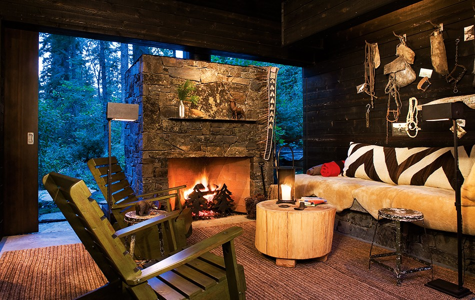

andersson-wise
- studio
- projects
- press
- monograph
- contact
stone creek
bigfork, mt

> featured project stone creek camp house
> featured press on the books - saint elmo public market
Andersson-Wise is an architecture & design studio based in Austin, Texas. Our collaborative approach to residential, institutional, and hospitality architecture results in precise solutions carefully attuned to their purpose.